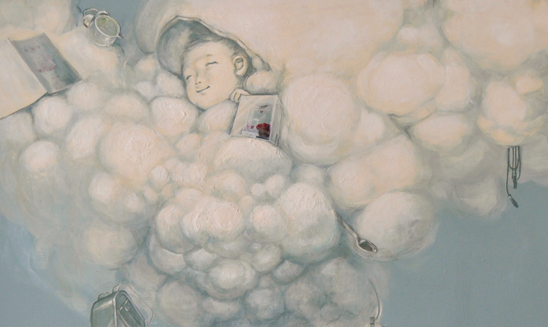
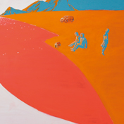
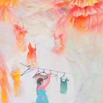
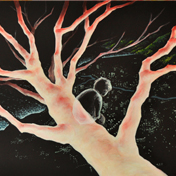

人のライフテージを理想と現実の対比によって
表現した平面作品の制作研究
|
期待 1167×803 |
ゆく先 1940×1303 |
むかしの夢 803×1167 |
|
安定思考 1303×970 |
成したこと 1167×803 |

人の年齢を3で割ると、その人が24時間のうち
大体何時頃の段階にいるかわかるという説に基づき
人のライフステージを1日の時間軸になぞらえて表現しました。
デジタルとアナログ・絵画とイラストの対比について考えた四年間でした。